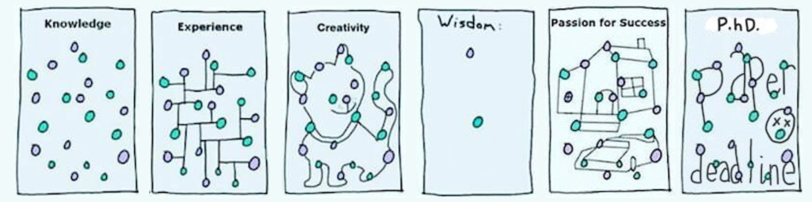

Hello World! My name is Caitao Zhan, a Ph.D. candidate at WINGS lab, Computer Science Department, Stony Brook University. My advisor is Prof. Himanshu Gupta.
My GitHub
My LinkedIn
My Blog (in Chinese)
My YouTube Channel
My LeetCode Profile
